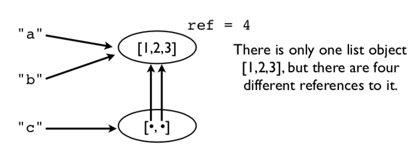

Contenido | Anterior (2.6 Listas por comprensión) | Siguiente (3. Organización del programa)
2.7 Objetos
Esta sección presenta más detalles sobre el modelo de objetos internos de Python y analiza algunos asuntos relacionados con la administración de memoria, la copia y la verificación de tipos.
Asignación
Muchas operaciones en Python están relacionadas con la asignación o almacenamiento de valores.
a = value # Asignación a una variable
s[n] = value # Asignación a una lista
s.append(value) # Anexar a una lista
d['key'] = value # Agregar a un diccionario
Precaución: las operaciones de asignación nunca hacen una copia del valor que se está asignando. Todas las asignaciones son simplemente copias de referencia (o copias de puntero si lo prefiere).
Ejemplo de asignación
Considere este fragmento de código.
a = [1,2,3]
b = a
c = [a,b]
Una imagen de las operaciones de memoria subyacentes. En este ejemplo, solo hay un objeto de lista [1,2,3], pero hay cuatro referencias diferentes a él.

Esto significa que modificar un valor afecta a todas las referencias.
>>> a.append(999)
>>> a
[1,2,3,999]
>>> b
[1,2,3,999]
>>> c
[[1,2,3,999], [1,2,3,999]]
>>>
Observe cómo un cambio en la lista original aparece en todos lados (¡vaya!). Esto se debe a que nunca se hicieron copias. Todo apunta a lo mismo.
Reasignación de valores
Reasignar un valor nunca sobrescribe la memoria utilizada por el valor anterior.
a = [1,2,3]
b = a
a = [4,5,6]
print(a) # [4, 5, 6]
print(b) # [1, 2, 3] Contiene el valor original
Recuerde: Las variables son nombres, no ubicaciones de memoria.
Algunos peligros
Si no sabe sobre este intercambio, en algún momento se disparará en el pie. Escenario típico. Modifica algunos datos pensando que son su propia copia privada y accidentalmente corrompe algunos datos en alguna otra parte del programa.
Comentario: Esta es una de las razones por las que los tipos de datos primitivos (int, float, string) son inmutables (solo lectura).
Identidad y referencias
Use el operador is para verificar si dos valores son exactamente el mismo objeto.
>>> a = [1,2,3]
>>> b = a
>>> a is b
True
>>>
is compara la identidad del objeto (un entero). La identidad se puede obtener usando id().
>>> id(a)
3588944
>>> id(b)
3588944
>>>
Nota: Casi siempre es mejor usar == para verificar objetos. El comportamiento de is suele ser inesperado:
>>> a = [1,2,3]
>>> b = a
>>> c = [1,2,3]
>>> a is b
True
>>> a is c
False
>>> a == c
True
>>>
Copias superficiales
Las listas y los diccionarios tienen métodos para copiar.
>>> a = [2,3,[100,101],4]
>>> b = list(a) # Hacer una copia
>>> a is b
False
Es una lista nueva, pero los elementos de la lista se comparten.
>>> a[2].append(102)
>>> b[2]
[100,101,102]
>>>
>>> a[2] is b[2]
True
>>>
Por ejemplo, se está compartiendo la lista interna [100, 101, 102]. Esto se conoce como copia superficial. Aquí hay una imagen.

Copias profundas
A veces es necesario hacer una copia de un objeto y de todos los objetos que contiene. Puede utilizar el módulo copy para esto:
>>> a = [2,3,[100,101],4]
>>> import copy
>>> b = copy.deepcopy(a)
>>> a[2].append(102)
>>> b[2]
[100,101]
>>> a[2] is b[2]
False
>>>
Nombres, valores, tipos
Los nombres de las variables no tienen un tipo. Son solo un nombre. Sin embargo, los valores sí tienen un tipo subyacente.
>>> a = 42
>>> b = 'Hello World'
>>> type(a)
<type 'int'>
>>> type(b)
<type 'str'>
type() le dirá cuál es. El nombre del tipo se utiliza generalmente como una función que crea o convierte un valor a ese tipo.
Comprobación de tipos
Cómo saber si un objeto es de un tipo específico.
if isinstance(a, list):
print('a is a list')
Comprobación de uno de los muchos tipos posibles.
if isinstance(a, (list,tuple)):
print('a is a list or tuple')
Precaución: No se exceda con la comprobación de tipos. Puede generar una complejidad excesiva en el código. Por lo general, solo lo haría si al hacerlo evitara errores comunes que cometen otras personas al usar su código.
Todo es un objeto
Números, cadenas, listas, funciones, excepciones, clases, instancias, etc. son todos objetos. Esto significa que todos los objetos que se pueden nombrar se pueden pasar como datos, colocar en contenedores, etc., sin ninguna restricción. No hay tipos especiales de objetos. A veces se dice que todos los objetos son "de primera clase".
Un ejemplo simple:
>>> import math
>>> items = [abs, math, ValueError ]
>>> items
[<built-in function abs>,
<module 'math' (builtin)>,
<type 'exceptions.ValueError'>]
>>> items[0](-45)
45
>>> items[1].sqrt(2)
1.4142135623730951
>>> try:
x = int('not a number')
except items[2]:
print('Falló!')
Falló!
>>>
Aquí, items es una lista que contiene una función, un módulo y una excepción. Puedes usar directamente los elementos de la lista en lugar de los nombres originales:
items[0](-45) # abs
items[1].sqrt(2) # math
except items[2]: # ValueError
Un gran poder conlleva una responsabilidad. El hecho de que puedas hacer eso no significa que debas hacerlo.
Ejercicios
En este conjunto de ejercicios, observamos parte del poder que proviene de los objetos de primera clase.
Ejercicio 2.24: Datos de primera clase
En el archivo Data/portfolio.csv, leemos datos organizados en columnas que se ven así:
name,shares,price
"AA",100,32.20
"IBM",50,91.10
...
En el código anterior, usamos el módulo csv para leer el archivo, pero aún así tuvimos que realizar conversiones de tipo manuales. Por ejemplo:
```python
for row in rows:
name = row[0]
shares = int(row[1])
price = float(row[2])
```
Este tipo de conversión también se puede realizar de una manera más inteligente utilizando algunas operaciones básicas de lista.
Haz una lista de Python que contenga los nombres de las funciones de conversión que usarías para convertir cada columna al tipo apropiado:
>>> types = [str, int, float]
>>>
La razón por la que puedes crear esta lista es que todo en Python es de primera clase. Por lo tanto, si quieres tener una lista de funciones, está bien. Los elementos de la lista que creaste son funciones para convertir un valor x en un tipo determinado (por ejemplo, str(x), int(x), float(x)).
Ahora, lee una fila de datos del archivo anterior:
>>> import csv
>>> f = open('Data/portfolio.csv')
>>> rows = csv.reader(f)
>>> headers = next(rows)
>>> row = next(rows)
>>> row
['AA', '100', '32.20']
>>>
Como se señaló, esta fila no es suficiente para realizar los cálculos porque los tipos son incorrectos. Por ejemplo:
>>> row[1] * row[2]
Traceback (most recent call last):
File "<stdin>", line 1, in <module>
TypeError: can't multiplicar sequence by non-int of type 'str'
>>>
Sin embargo, tal vez los datos se puedan emparejar con los tipos que especificaste en types. Por ejemplo:
>>> types[1]
<type 'int'>
>>> row[1]
'100'
>>>
Intenta convertir uno de los valores:
>>> types[1](row[1]) # Igual que int(row[1])
100
>>>
Intenta convertir un valor diferente:
>>> types[2](row[2]) # Igual que float(row[2])
32.2
>>>
Intenta el cálculo con valores convertidos:
>>> types[1](row[1])*types[2](row[2])
3220.0000000000005
>>>
Comprime los tipos de columna con los campos y mira el resultado:
>>> r = list(zip(types, row))
>>> r
[(<type 'str'>, 'AA'), (<type 'int'>, '100'), (<type 'float'>,'32.20')]
>>>
Notarás que esto ha emparejado una conversión de tipo con un valor. Por ejemplo, int está emparejado con el valor '100'.
La lista comprimida es útil si quieres realizar conversiones en todos los valores, uno después del otro. Prueba esto:
>>> converted = []
>>> for func, val in zip(types, row):
converted.append(func(val))
...
>>> converted
['AA', 100, 32.2]
>>> converted[1] * converted[2]
3220.0000000000005
>>>
Asegúrate de entender lo que está sucediendo en el código anterior. En el bucle, la variable func es una de las funciones de conversión de tipo (p. ej., str, int, etc.) y la variable val es uno de los valores como 'AA', '100'. La expresión func(val) convierte un valor (algo así como una conversión de tipo).
El código anterior se puede comprimir en una única lista por comprensión.
>>> converted = [func(val) for func, val in zip(types, row)]
>>> converted
['AA', 100, 32.2]
>>>
Ejercicio 2.25: Creación de diccionarios
¿Recuerdas cómo la función dict() puede crear fácilmente un diccionario si tienes una secuencia de nombres y valores de claves? Hagamos un diccionario a partir de los encabezados de las columnas:
>>> headers
['name', 'shares', 'price']
>>> convert
['AA', 100, 32.2]
>>> dict(zip(headers, convert))
{'price': 32.2, 'name': 'AA', 'shares': 100}
>>>
Por supuesto, si ya tienes experiencia con las listas por comprensión, puedes hacer toda la conversión en un solo paso usando una comprensión de diccionarios:
>>> { name: func(val) for name, func, val in zip(headers, types, row) }
{'price': 32.2, 'name': 'AA', 'shares': 100}
>>>
Ejercicio 2.26: El panorama general
Si utiliza las técnicas de este ejercicio, podrá escribir instrucciones que conviertan fácilmente los campos de casi cualquier archivo de datos orientado a columnas en un diccionario de Python.
Solo para ilustrar, supongamos que lees datos de un archivo de datos diferente como este:
>>> f = open('Data/dowstocks.csv')
>>> rows = csv.reader(f)
>>> headers = next(rows)
>>> row = next(rows)
>>> headers
['name', 'price', 'date', 'time', 'change', 'open', 'high', 'low', 'volume']
>>> row
['AA', '39.48', '6/11/2007', '9:36am', '-0.18', '39.67', '39.69', '39.45', '181800']
>>>
Convirtamos los campos usando un truco similar:
>>> types = [str, float, str, str, float, float, float, float, int]
>>> converted = [func(val) for func, val in zip(types, row)]
>>> record = dict(zip(headers, converted))
>>> record
{'volume': 181800, 'name': 'AA', 'price': 39.48, 'high': 39.69,
'low': 39.45, 'time': '9:36am', 'date': '6/11/2007', 'open': 39.67,
'change': -0.18}
>>> record['name']
'AA'
>>> record['price']
39.48
>>>
Bonificación: ¿Cómo modificarías este ejemplo para que sea adicional? ¿Cómo analizar la entrada date en una tupla como (6, 11, 2007)?
Dedica un tiempo a reflexionar sobre lo que has hecho en este ejercicio. Volveremos a tratar estas ideas un poco más adelante.
Contenido | Anterior (2.6 Listas por comprensión) | Siguiente (3. Organización del programa)